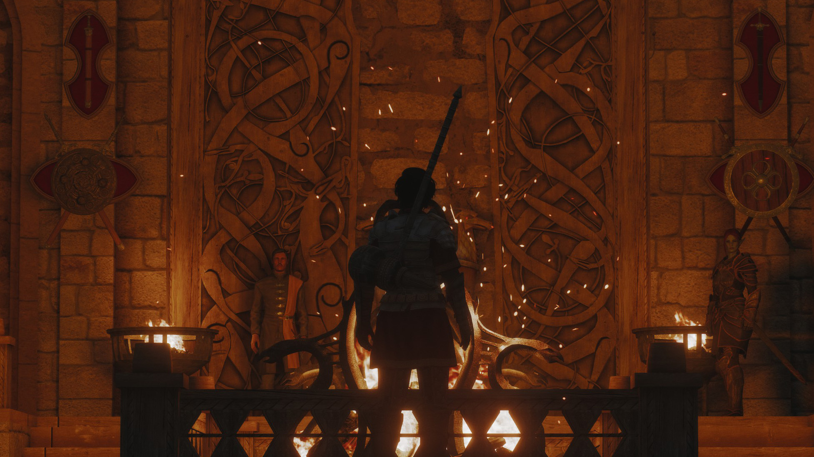
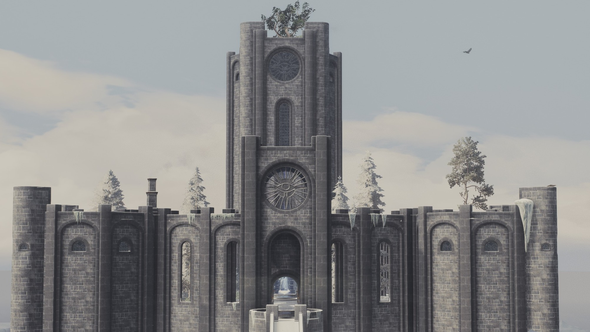
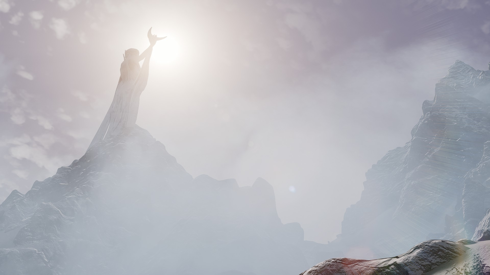
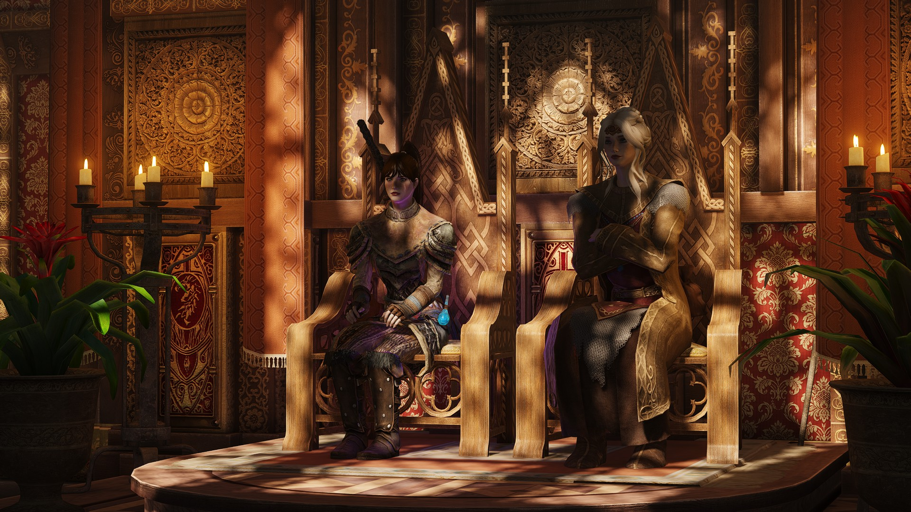
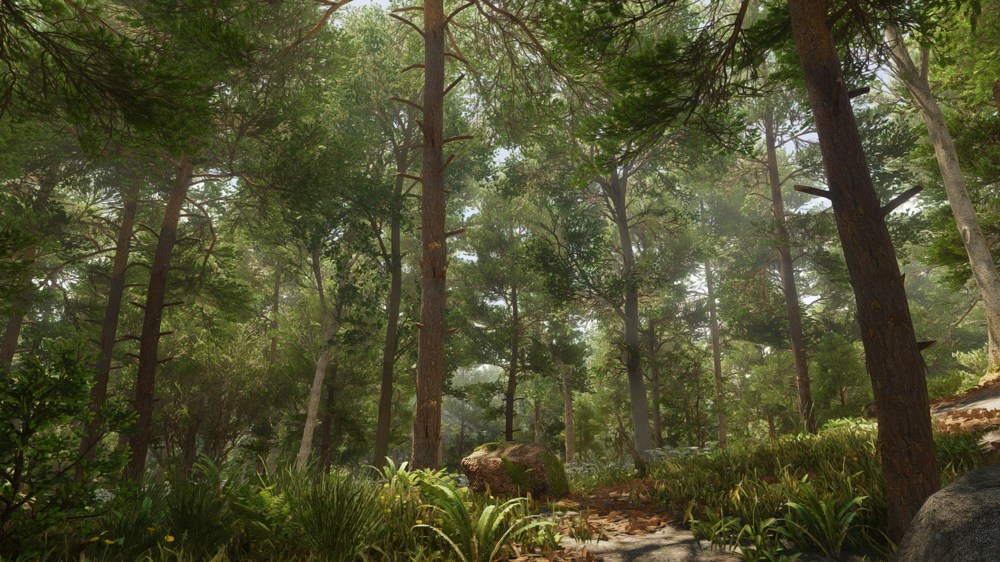
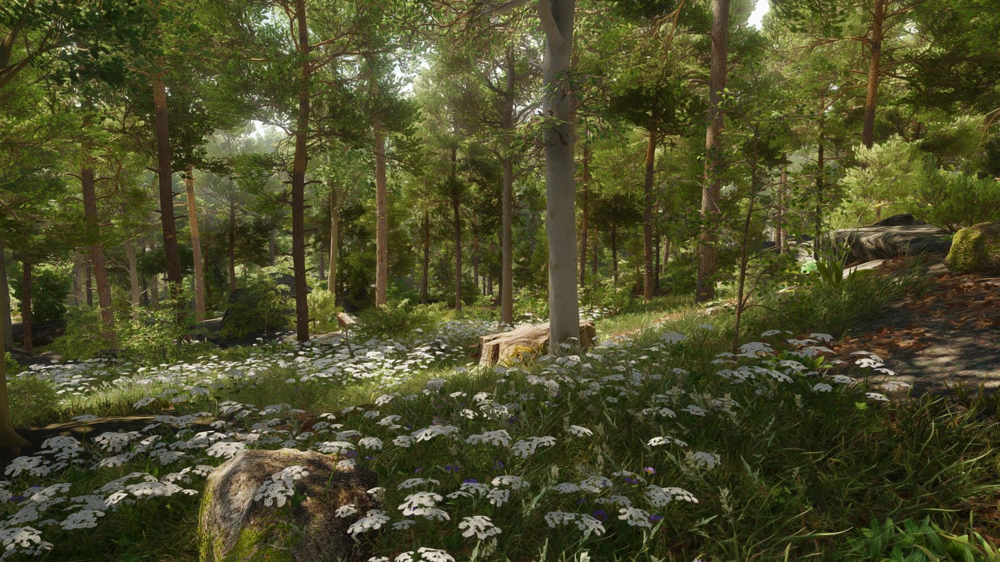
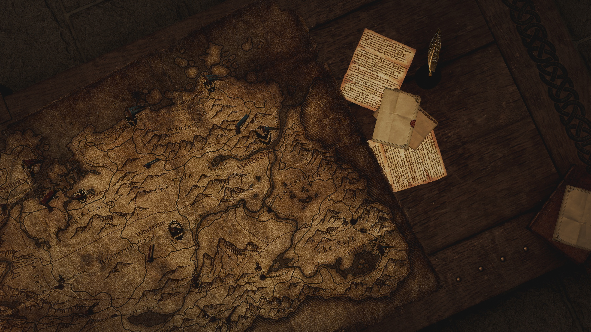

Experience the Next - Generation of Immersive Survival Roleplay.
Ultimate Fantasy Survial Sim, built for Skyrim Special Edition. Powered by MissileMann

SkyGround is a free, auto-installable modpack for Skyrim that builds on Skyrim’s foundation to deliver an immersive fantasy roleplaying game like no other.
With over 2500+ mods and deep integration, SkyGround creates a living world where you become who you want, act as you want, and thrive in a deeply simulated universe.
In SkyGround, Requiem turns every road, ruin, and storm into a real challenge. Food, warmth, equipment, and timing matter just as much as combat skill. Victory belongs to the prepared.

This is not just a visual overhaul thrown together. SkyGround combines high quality graphical upgrades that are tested, refined, and performance conscious, so the world looks incredible while staying playable on mid range systems.

SkyGround delivers a Requiem-based survival experience where danger is constant and growth is hard-won. Start small, learn the world, and build your strength through smart choices, not shortcuts.

SkyGround delivers a deeper combat experience with stances, parry mechanics, and NPCs that can parry back. Custom perk trees and full unarmed integration open up more ways to build your character, while BFCO powers over 9,000 total animations for fluid and varied fights. All of it is further enhanced by Requiem's combat system for a harsher, more tactical experience.






